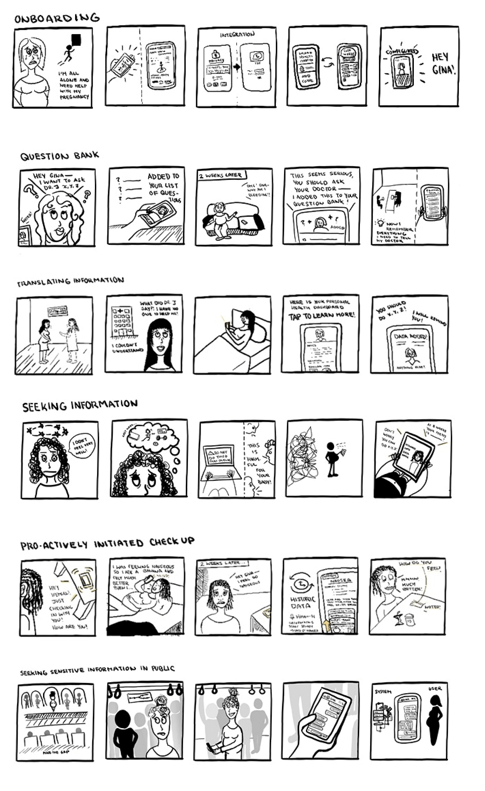
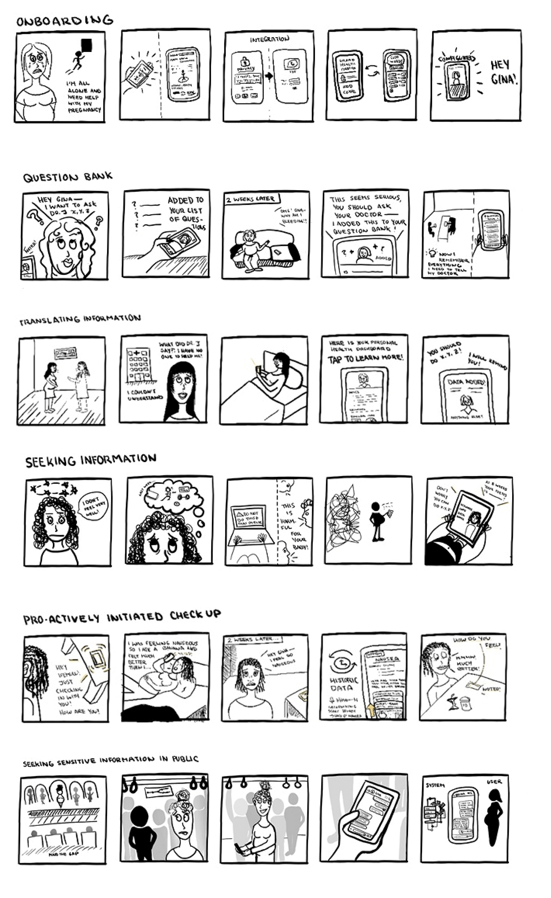
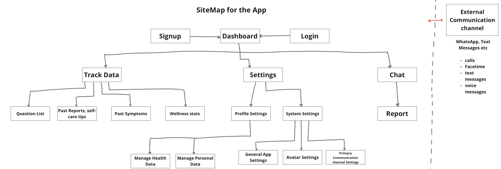

Yemaya
Yemaya is a digital assistant designed to provide accessible and relatable support for pregnant women, aiming to promote informed decision-making, improve maternal and neonatal health outcomes, and empower women with a sense of agency over their pregnancy.
Aim
Addressing the United Nations Sustainable Development Goals (SDG) 3 and 5
Duration
September 2022 - December 2022 | 3 months
Client
Group Project for Interaction Design Module during MSc in HCI
Role
User Research, UX Design, Wireframing, Prototyping
Tools
Microsoft Forms, Figma, Miro
Background
Despite the UN SDG target of reducing maternal mortality rates, the global rate of maternal deaths per 100,000 live births is over three-fold greater than the target. Complications during pregnancy are a major cause of death in children under five, especially in low- and middle-income countries. Many of these deaths can be prevented or treated if proper healthcare is available early on. Therefore, it is crucial to improve access to and utilization of good-quality prenatal care to lower maternal and infant mortality rates in developing areas.
User Research
Methodology
We conducted research to gain insights into pregnancy tools and users. Based on our understanding of the problem landscape, we conducted a mixed-methods survey. The survey involved 83 participants primarily from the UK, South Africa, US, Greece, and Japan. Most participants were married/in a relationship, aged 20-39, and had previous childbirth experience.
Quantitative Insights
-Primary information sources were friends/family, medical providers, and search engines.
-Medical providers were most trusted, but friends/family were rated highest for enjoyment/relatability.
-Friends/family offer accessible, supportive, and relatable information, while medical professionals are seen as inaccessible and medicalized.
-Majority relied on parents and friends for social support.
Qualitative Insights
Women seek greater agency in pregnancy due to limited confidence, medical language challenges, poor provider relationships, and lack of reliable information.
Valuable insights and understandings about the problem, users, and their needs were generated by utilizing parsing and framing methodologies on the data collected during the discovery phase.
We constructed an affinity diagram of the most relevant themes from initial research. This process revealed crucial issues, creating multiple opportunities and a clearer direction.

To ensure that our problem was grounded in users’ needs, we developed 4 user personas to empathise with the challenges and goals of pregnant women. The objective was to sufficiently portray the various users and their possible requirements.

Through this, we defined our core problem statement to guide our design solution:
Pregnant women lack agency over their pregnancy due to low confidence in their own knowledge and capabilities.
Design Ideation
How might we design digital interventions to facilitate the needs of pregnant women by providing trusted and relatable information, and promoting agency in managing their health?
Based on our problem statement, we ideated potential solutions by collectively generating 40 ideas through crazy-eights rapid sketching.

We generated multiple ideas and simplified them into basic concepts. These concepts were organized based on common interfaces and information-seeking issues. To determine the best direction, we created evaluation matrices to compare the ideas. Finally, team members participated in dot voting to select the winning solution.

Three main design directions were selected:
1. A physical device that would support sensemaking of physiological information;
2. Systems that foster social interaction between mothers to promote sharing of information and support;
3. A digital assistant that would help address information-seeking needs.
Evaluating these in relation to our problem statement and design constraints, a digital assistant was selected as the most viable and effective direction.
Methodology
To specify the requirements of an information-seeking assistant, we conducted in-depth semi-structured interviews with three previously-pregnant women, aged 30–40, from South Africa and USA. The interviews explored self-directed information-seeking during pregnancy in relation to agency. Core insights were generated through an inductive thematic analysis.
Insights
Based on the insights and with a strong grasp of the information-seeking problems of users, we specified users’ core interactions
Through this, the system requirements were outlined as follows:
• Integrate with messaging channels for information exchange;
• Generate reliable responses by using a trusted pregnancy source database;
• Organize and store information for user access;
• Simplify medical information into understandable language;
• Incorporate user data into response content;
• Allow users to customize the assistant's appearance and personality.
Testing Interactions
Methodology
Four participants from different countries interacted with a proposed assistant to seek information. They explored four imagined pregnancy scenarios through a WhatsApp conversation using a Wizard of Oz approach. We acted as the assistant, assessing users' experiences through the "think aloud" method and follow-up interviews.
Insights
Participants found the assistant useful, providing immediate, relevant, and trusted information. They valued informative answers over comforting phrases and appreciated the empathy. Engaging through a native channel was effective, especially for users with data constraints. The conversational assistant made information feel personal, empowering, and secure.
Information Architecture
Concluding that the core interactions between the assistant and user could satisfy the user’s central needs, we generated a storyboard to envision how users might engage with a product that supports the core information-seeking interactions.
 

Using a task analysis, I developed a user story map to depict the activities and tasks a user undergoes while using our product. This helped organize and prioritize the user's activities and tasks within the system.

To comprehend the structure of our app and how it integrates with multiple channels, I generated a sitemap
Prototype
Using findings from interaction testing, I created low-fidelity wireframes to design our application.

After iterating, I rendered the high-fidelity flows for the product's communication and onboarding elements.
Introducing Yeamaya Using advances in natural language processing technologies and recent developments in natural language generation, the assistant facilitates familiar interactions through conversation.
Upon downloading the Yemaya app, users complete an onboarding process by providing personal information and health data. Users can then set up their personalized assistant for improved engagement and comfort. Yemaya offers customization options for the assistant's appearance, including avatars that can be customized to personal preference.
Yemaya introduces a unique feature allowing users to use code words to discuss sensitive health issues. The app remembers these code words for future conversations, enhancing privacy and preventing others from overhearing or seeing the discussion.

Yemaya, a chatbot assistant, understands and responds to mothers' questions and concerns, considering their context. It provides up-to-date medical information, simplifies complex jargon, and fact-checks shared resources.
Yemaya remembers users' health concerns and can follow up on their progress. It assists in remembering important questions for doctor's appointments.
For privacy, Yemaya can be added as a phone contact and accessed through messaging apps like WhatsApp with minimal data usage.
Yemaya effectively addresses user pain points, providing an innovative digital solution for pregnant women to improve their experience and reduce complications. The health education component supports autonomy and aligns with UN SDG 5 and SDG 3. Integration with messaging apps ensures accessibility and privacy. The project advances HCI and allowed me to enhance my user research and visual design skills as the sole UI designer, progressing from low-fidelity to high-fidelity mockups.
If I were to redo this project, I would have evaluated the solution's usefulness among pregnant women specifically. Our participants, were not currently pregnant, potentially affecting the validity of our findings. Limited project scope prevented the implementation of all desired features, and the prototype needs additional high-fidelity testing. Further refining the user flow and exploring additional functionality can enhance the user experience.
Contact
Let's have a talk so you can learn more about my work!


© Copyright Ioanna Lazaridou | All rights reserved.